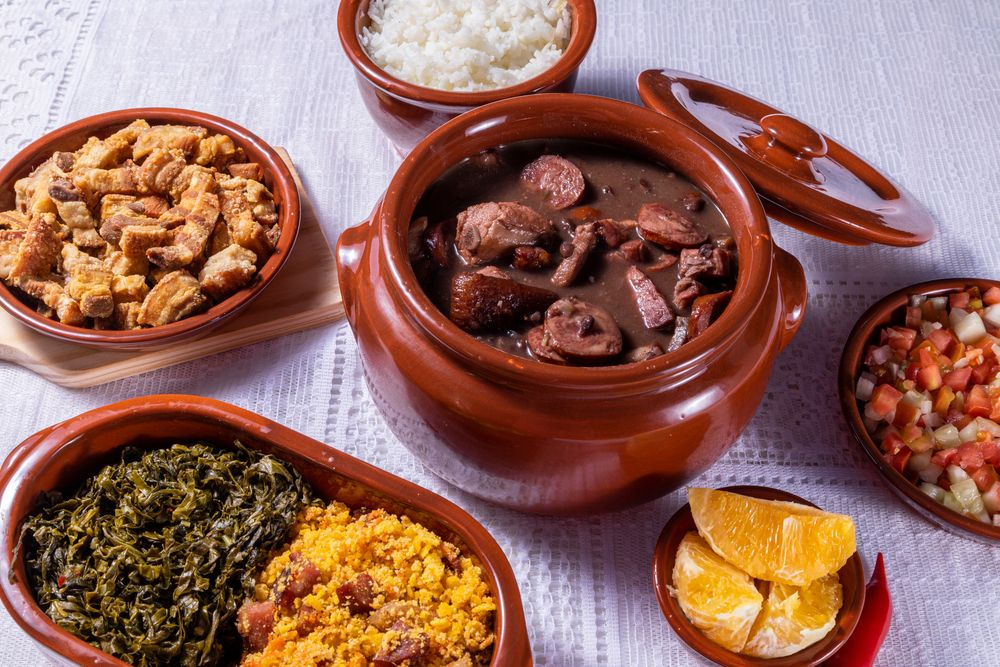

Receita 1
Ingredientes
- 1 lata de creme de leite
- 1 lata de milho verde
- 1 copo de requeijão cremoso
- 100 g de azeitona sem caroço
- 2 peitos de frango desfiados
- 200 g de mussarela fatiada
- 100 g de batata palha
- 1 xícara de água
- 1 pitada de sal
Modo de Preparo
Bata no liquidificador o milho, o requeijão, o creme de leite e a água. Refogue o creme do liquidificador com o frango desfiado, as azeitonas e o sal até ficar com uma textura espessa. Coloque o refogado numa assadeira, cubra com mussarela e espalhe a batata palha por cima. Leve ao forno até borbulhar. Sirva com arroz branco. Cozinhe a massa segundo as orientações do fabricante, despeje em um refratário com água gelada para não grudar e reserve.
Receita 2
Ingredientes
- 500 g de massa de lasanha
- 500 g de carne moída
- 2 caixas de creme de leite
- 3 colheres de manteiga
- 3 colheres de farinha de trigo
- 500 g de presunto
- 500 g de mussarela
- sal a gosto
- 2 copos de leite
- 1 cebola ralada
- 3 colheres de óleo
- 1 caixa de molho de tomate
- 3 dentes de alho amassados
- 1 pacote de queijo ralado
Modo de Preparo
MOLHO À BOLONHESA Refogue o alho, a cebola, a carne moída, o molho de tomate, deixe cozinhar por 3 minutos e reserve. MOLHO BRANCO Derreta a margarina, coloque as 3 colheres de farinha de trigo e mexa. Despeje o leite aos poucos e continue mexendo. Por último, coloque o creme de leite, mexa por 1 minuto e desligue o fogo. MONTAGEM Despeje uma parte do molho à bolonhesa em um refratário, a metade da massa, a metade do presunto, a metade da mussarela, todo o molho branco e o restante da massa. Repita as camadas até a borda do recipiente. Finalize com o queijo ralado e leve ao forno alto (220° C), preaquecido, por cerca de 20 minutos.Receita 3

Ingredientes
- 1 kg de feijão preto
- Água o quanto baste
- 2 línguas defumadas ou salgadas
- 1 kg de carne seca
- 1/2 kg de costelinha de porco salgada
- 1/2 kg de lombo de porco salgado
- 1/2 kg de lingüiça calabresa defumada
- 2 paios
- 1/4 kg de toucinho defumado
- 2 pés de porco salgados
- 1 rabo de porco salgado
- 2 orelhas de porco salgadas
- 3 cebolas cortadas em cubos
- 3 dentes de alho picados
- 4 folhas de louro
- Pimenta malagueta amassada (opcional)
- >1/2 xícara de óleo ou banha de porco